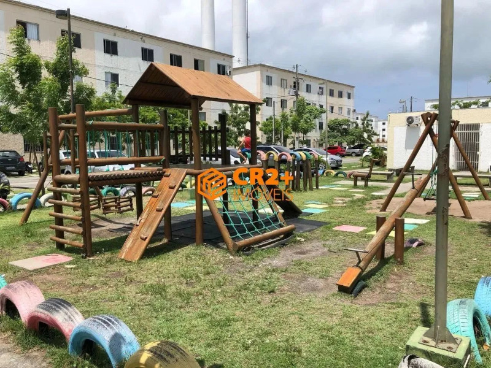

Introdução
As oportunidades criadas pela inclusão digital podem transformar as condições do indivíduo, levando-o a contribuir na construção da cidadania a partir de uma maior participação na vida política e nas decisões públicas, sem aderir ao discurso da inclusão digital. A inclusão digital pode promover a participação do indivíduo no ciberespaço, que se torna a cada dia a esfera dos debates públicos e que se apresenta como espaço de decisões do Estado. O uso crítico das técnicas e tecnologias da informação, juntamente a outras ações, para promoção da igualdade, pode levar o cidadão ao desenvolvimento da cidadania plena, que exige uma nova transformação nos sentidos do trabalho, que hoje se faz responsável pela ocupação e a inserção social. Haja vista que, consideradas as adequações necessárias, os programas sociais de inclusão digital podem ir “além do simples acesso” ao computador e a internet, propiciando transformações e conquistas no espaço social.
Entender a relevância desse assunto, implica em conscientizar a população que no mundo de hoje, a tecnologia permite a criação de novas oportunidades de emprego, garantindo que todas as pessoas tenham acesso a vagas, independentemente da sua classe social. Estamos em plena transformação global, então quanto mais acessibilidade, capacitação e mais democrático for essa inclusão digital, teremos mais profissionais qualificados e mais desenvolvimento para o país.
Contextualizando o assunto principal de acordo com o texto proposto na atividade prática de extensão, o projeto tratará de apresentar através de uma pequena palestra a uma comunidade, que a inclusão digital é algo que vai além do necessário pra todas as idades, classes sociais, ou até pessoas com deficiências visuais, motoras, de cognição entre outras, é trazer para essas pessoas que além de proporcionar autonomia e convívio social, pode se tornar crucial para progressão e facilidade de nossas vidas, afinal com apenas um dispositivo e um acesso à internet, temos todas informações sobre qualquer que seja o conteúdo .
Na comunidade palestrada, o projeto foi apresentado as mais variadas idades e níveis de conhecimento tecnológico, explicando a importância da inserção digital no mundo em que vivemos, de forma clara foi explicado os diversos pontos positivos, mas também os desafios que existem no tema proposto, os vícios, os riscos a saúde de uma pessoa que ficar o dia todo em uma tela, do tipo de conteúdo que crianças estão consumindo e dificuldades que idosos tem ao acesso. A disparidade econômica está diretamente ligada à falta de condições de acesso aos meios digitais, por isso todos devem ter as mesmas oportunidades de acessar a internet, sem importar com sua habilidade ou qualidade.
[FOTO]
Objetivo
Esclarecer que a inclusão digital promove a redução de desigualdade social, melhora a qualidade de vida, é um pilar para construção de uma sociedade mais justa e igual, amplia o acesso ao conhecimento, potencializa a inserção de pessoas no mercado de trabalho independente de sua condição física, financeira ou sua idade. Em contraposta os riscos que podem ser obtidos através dos exageros no uso de telas causando problemas de visão, a exposição de conteúdo inadequado, pirataria, comodismo que pode desencadear o sedentarismo e obesidade.
Incentivar pessoas idosas, deficientes ou pessoas com pouca habilidade que o acesso à internet promove o aumento da autoestima, autoconfiança, reduz o isolamento e a marginalização, também inclui melhorias na saúde mental e emocional. A facilidade e praticidade que trás o uso de tecnologias, melhorando a qualidade de vida dessas pessoas. Seja do mais básico como ensinar pessoas a pedir um aplicativo de carona, ou pesquisar sobre alguma acontecimento político, baixar aplicativos essenciais em seu celular ou até mesmo uma simples pesquisa de uma receita, onde em apenas alguns cliques, minutos, se resolve um problema que poderia demorar horas ou ter uma grande dificuldade de ser executado sem o devido uso da tecnologia.
Alertar que existe um lado obscuro, estamos cada vez mais envolvidos em golpes cibernéticos, principalmente para aquelas pessoas que não tem habilidade ou acesso a tecnologias. A falta de conhecimento e acesso pode aumentar consideravelmente o risco a esses tipos de golpes. O objetivo foi tentar passar que o desenvolvimento nessa área deveria ser garantido a todos de forma acessível, segura e eficiente.
[FOTO]
Caracterização da área
O município de Paulista está localizado ao norte da capital pernambucana e faz parte da região metropolitana do Recife. Segundo dados do Instituto Brasileiro de Geografia e Estatística (IBGE) ocupa uma área de 93,52 km² com população estimada de 316.719 habitantes. Predomina atividades ligadas ao setor de serviços, comércio e indústria. A agroindústria também é um dos pilares econômicos do município voltada aos setores de álcool e açúcar.
O empreendimento TENDA Residencial Campo da Aviação, está localizado em Maranguape I, Paulista-PE, na rua Campo de Pouso, próximo ao centro da cidade. A região conta com mercados, escolas e centro universitários em suas redondezas. Atualmente o residencial conta mais de 304 famílias, com 19 torres contendo 16 apartamentos em cada uma delas. A região conta com uma vasta quantidade de comércios ao redor, e grande movimentação em todos os dias da semana. Contando com pessoas de uma classe sociais média baixa. Fui autorizado através do síndico a fazer uma palestra dentro do condomínio dentro do parque. Trazendo o tema de inclusão digital como de total importância para todas as faixas etárias e classes sociais.
Local de execução e público-alvo
O local de execução foi dentro desse condomínio, em um parque. Como a região conta com mais de 304 famílias, o local é bem movimentado com diferentes faixas etárias. O público alvo da minha proposta foi Alertar, Contextualizar, Incentivar e conscientizar todas essas pessoas das variadas faixas etárias o uso da internet, que está ligado diretamente à importância da inclusão na sociedade. Alertando crianças de como o tempo de uso de dispositivos pode atrapalhar o seu desempenho e crescimento, aos pais dos conteúdos inadequados que são expostos a acessibilidade da internet, para aquelas pessoas de pouca habilidade explicando por exemplo na falta de oportunidade no mercado de trabalho por conta da escassez desse conhecimento, aos idoso incentivando o uso para maior facilidade e comodidade na execução de alguma tarefa, pesquisa ou ajuda
Materiais e métodos de abordagem
Entrei em contato com o responsável pelo local. Propus uma palestra para um grupo de pessoas. Expliquei inicialmente como seria todo o processo e obtive total aprovação. Foi aberto momentos para debates, dúvidas na intenção de gerar impacto e compreensão em tudo o que eu estava falando. Recolhi algumas dúvidas, ensinei algumas tarefas, dei todo um suporte para quem não havia habilidade, apresentei alguns vídeos tutorias de coisas básicas a se fazer usando a internet, indiquei livros, canais no YouTube, páginas no Instagram para o mais variado público. Depois debati um a um, o que pode ou não ser feito para que haja uma harmonia sobre o tema apresentado. Usando apenas uma prancheta e um dispositivo eu pude causar um impacto social para pelo menos 15 pessoas.
[FOTO]Resultados esperados
Resultados esperados
Sensibilizar à conscientização do público para a importância da inclusão digital, incentivando que não há faixa etária, fator econômico, condição física ou habilidade para aprender e começar. Alertando e pontuado tudo aquilo que traz para um bem estar ou faz mal eles.
Demostrar como o conhecimento do assunto pode mudar radicalmente seu estilo de vida, seja no diferencial de um emprego, seja no controle dos pais para com seus filhos no uso de celulares, seja na iteração social com pessoas PCD no uso de tecnologias.
Impactar socialmente foi o objetivo principal, gerar debates, perguntas, dúvidas sobre atitudes, tentar mostrar para o público alvo todos os benefícios e males da tecnologia, mostrar um pouco do que eu faço em meu curso, de como a tecnologia pode levar qualquer pessoa a níveis altos, se tornar um diferencial na qualidade de vida, mas também alertar que pode levar à ruina.